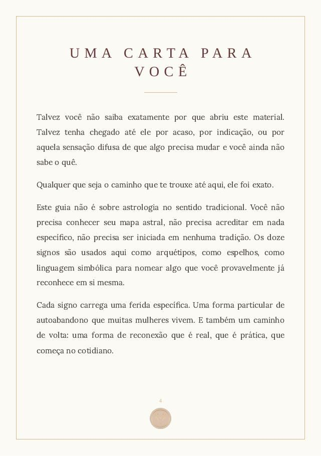
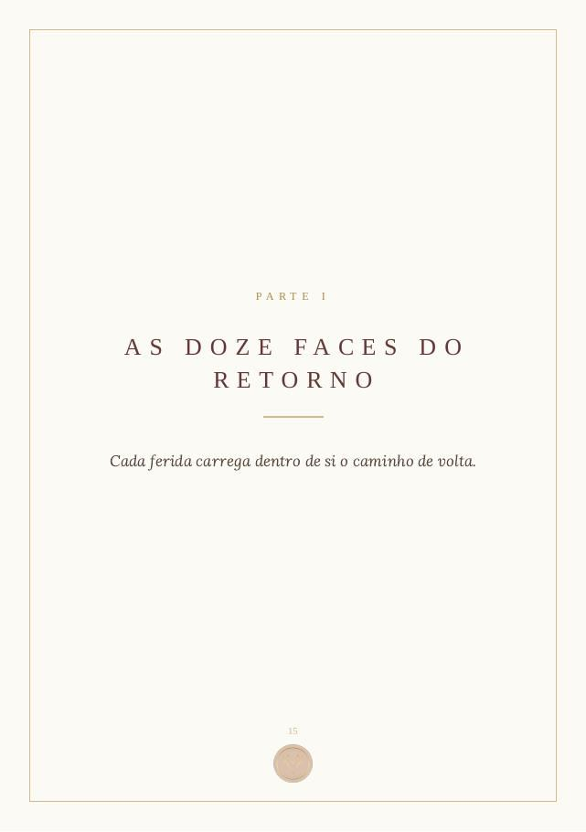
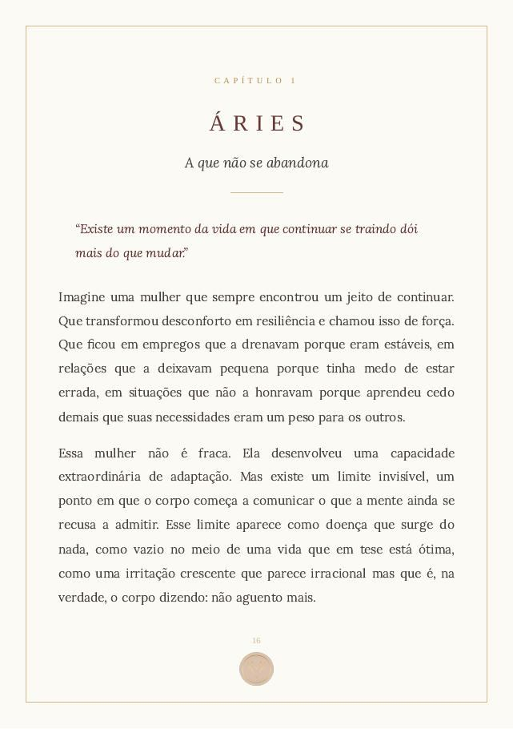
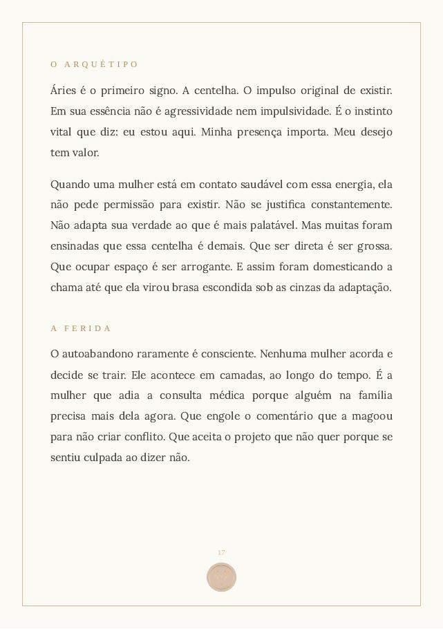

"O Retorno para Si" usa os doze signos como espelhos, não como técnica: cada um nomeia uma forma de autoabandono que muitas mulheres vivem, e um caminho prático de volta. Você não precisa saber astrologia nem conhecer o seu mapa para reconhecer as suas páginas, porque você carrega dentro de si as doze energias do zodíaco, cada uma na sua intensidade, e não só a do seu signo solar.
Quero o ebook · R$ 44 PDF · 87 páginas · R$ 44, pagamento único
Nenhuma dessas coisas é falta de força. É autoabandono acumulado em silêncio, gesto por gesto, até a vida não comportar mais. O ebook nomeia isso, com precisão, capítulo por capítulo.
Cada signo é lido como um arquétipo: uma ferida específica, uma sombra reconhecível e um caminho simples de volta para si.
Coragem de existir
Direito ao prazer
Fim da autocensura
Lar interno
Presença sem pedir licença
Descanso antes do colapso
Amor sem autoabandono
Fim como liberação
Direção, não só rotina
Força sem desgaste
Romper por consciência
A intuição como saber
"A sua nova vida começa no instante em que você para de negociar a própria verdade."
"Você não precisa ser impecável. Precisa estar viva."
"Quando você silencia, você volta para si."
Estas são páginas reais do livro, do jeito que elas chegam no seu PDF. Arraste para o lado para ver.




87 páginas no total, em PDF, para ler no celular ou imprimir.
Você carrega dentro de si as doze energias do zodíaco, cada uma na sua intensidade, e essa intensidade muda conforme o ciclo que você atravessa. Abra a sua mensagem e veja qual está pedindo passagem agora.
Isto é uma amostra simbólica. O livro percorre esse caminho inteiro, com um capítulo para cada energia.

Sou astróloga. Passei anos vivendo nos bastidores da minha própria vida: Ciências Contábeis, trabalho com o meu pai, tudo certo por fora. Até a pandemia transbordar o que eu vinha engolindo. Foi na astrologia que encontrei uma linguagem para nomear o que eu sentia e não sabia dizer.
Este ebook é a organização de anos de estudo e de olhar para dentro. Escrevi para devolver a você o mesmo alívio que encontrei: nomear, para poder voltar.
Toda semana eu escrevo sobre o movimento do céu e o que ele pede de nós. Somos essa força de mulheres atravessando juntas, e cada uma que chega deixa o círculo mais forte. Venha contribuir com a sua energia.
Comece agora pela face que mais te chamar.
Quero o ebook · R$ 44Quer se aprofundar? Conheça Mulheres em Travessia, também por R$ 44.